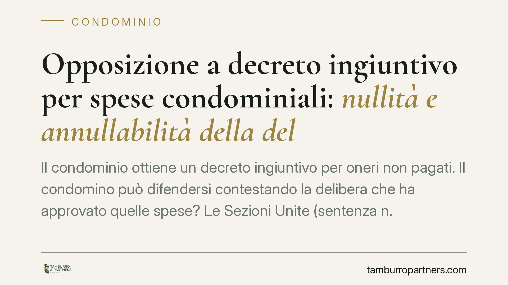

Opposizione a decreto ingiuntivo per spese condominiali: nullità e annullabilità della delibera
Il condominio ottiene un decreto ingiuntivo per oneri non pagati. Il condomino può difendersi contestando la delibera che ha approvato quelle spese? Le Sezioni Unite (sentenza n. 9839/2021) hanno fissato una distinzione netta: i vizi di nullità si possono sempre dedurre, quelli di annullabilità no, se è scaduto il termine per impugnare. Una differenza che decide l'esito della causa.

Il caso
È una sequenza frequente. L'amministratore, forte di una delibera assembleare che approva il riparto delle spese, chiede e ottiene dal giudice un decreto ingiuntivo contro il condomino moroso. Il condomino, a quel punto, propone opposizione. Ma può, in quella sede, contestare la delibera che sta a monte della richiesta di pagamento?
La questione era controversa. Le Sezioni Unite della Cassazione sono intervenute con la sentenza n. 9839 del 4 aprile 2021, tracciando un confine che oggi orienta ogni difesa in materia.
Inquadramento normativo
Il punto di partenza è la distinzione tra due categorie di vizi delle delibere assembleari.
Le delibere annullabili sono quelle affette da vizi meno gravi: difetti di convocazione, violazioni procedurali, errori nella formazione delle maggioranze. L'art. 1137 del Codice civile stabilisce che il condomino assente, dissenziente o astenuto può impugnarle, ma entro trenta giorni dalla deliberazione o dalla comunicazione del verbale. Decorso quel termine, la delibera diventa definitivamente efficace.
Le delibere nulle sono affette da vizi radicali: oggetto impossibile o illecito, mancanza assoluta di requisiti essenziali, violazione di diritti individuali su beni comuni. In questi casi opera l'art. 1421 c.c., per cui la nullità può essere fatta valere da chiunque vi abbia interesse e può essere rilevata anche d'ufficio dal giudice, senza limiti di tempo.
Le Sezioni Unite hanno applicato questa dicotomia al giudizio di opposizione a decreto ingiuntivo. Il risultato è lineare:
- i vizi di nullità possono essere dedotti in opposizione in ogni momento, e il giudice li rileva anche d'ufficio;
- i vizi di annullabilità possono essere fatti valere solo con una specifica e tempestiva impugnazione ex art. 1137 c.c. Se il termine di trenta giorni è scaduto, la delibera non è più contestabile nemmeno in sede di opposizione.
Perché la distinzione è decisiva
La conseguenza pratica è rilevante. Se il condomino oppone il decreto lamentando, ad esempio, di non essere stato correttamente convocato all'assemblea, sta deducendo un vizio di annullabilità. Se quel vizio non è stato impugnato nei trenta giorni, l'opposizione su quel punto è destinata a essere respinta: la delibera fa stato e legittima la richiesta di pagamento.
Se invece il condomino contesta, poniamo, un riparto delle spese che viola i criteri legali inderogabili — si pensi all'applicazione distorta degli artt. 1123 e 1126 c.c. sulla ripartizione per millesimi o per gruppi di condòmini — la questione può sconfinare nella nullità. In quel caso la contestazione resta ammissibile a prescindere dal decorso del termine.
La linea di confine, però, non è sempre netta. Molte violazioni dei criteri di riparto sono state ricondotte dalla giurisprudenza all'annullabilità, non alla nullità. Qualificare correttamente il vizio è quindi il passaggio tecnico che determina l'esito: un errore di inquadramento può far perdere una difesa altrimenti fondata.
Implicazioni pratiche
Per il condomino, il messaggio è chiaro: non si può contare sull'opposizione a decreto ingiuntivo come strumento per rimettere in discussione tutto. La delibera non impugnata nei termini resta, nella grande maggioranza dei casi, intangibile.
Per il condominio e l'amministratore, la pronuncia rafforza la solidità del recupero crediti fondato su delibere regolarmente approvate e non impugnate.
Cosa fare in concreto
- Verificate subito la data del verbale. Il termine di trenta giorni per impugnare le delibere annullabili è perentorio: una volta scaduto, la strada dell'impugnazione è chiusa.
- Qualificate con precisione il vizio. Prima di impostare la difesa, stabilite se la contestazione riguarda un profilo di nullità (deducibile sempre) o di annullabilità (soggetto al termine).
- Non confondete i due rimedi. L'impugnazione ex art. 1137 c.c. e l'opposizione a decreto ingiuntivo seguono logiche diverse: valutate se agire con entrambi.
- Conservate le comunicazioni dell'amministratore. Convocazioni, verbali e date di ricezione sono spesso decisivi per calcolare i termini.
- Agite senza attendere il decreto. Se intendete contestare una delibera, l'impugnazione tempestiva è più efficace della difesa successiva.
Disclaimer
Contributo informativo a cura di Tamburro & Partners - Avv. Giuseppe Tamburro. Non costituisce parere legale.
Ogni condominio ha una storia a sé.
Se gestisci un'amministrazione e vuoi un confronto su una specifica questione condominiale, scrivi allo studio. Ti rispondiamo entro un giorno lavorativo.